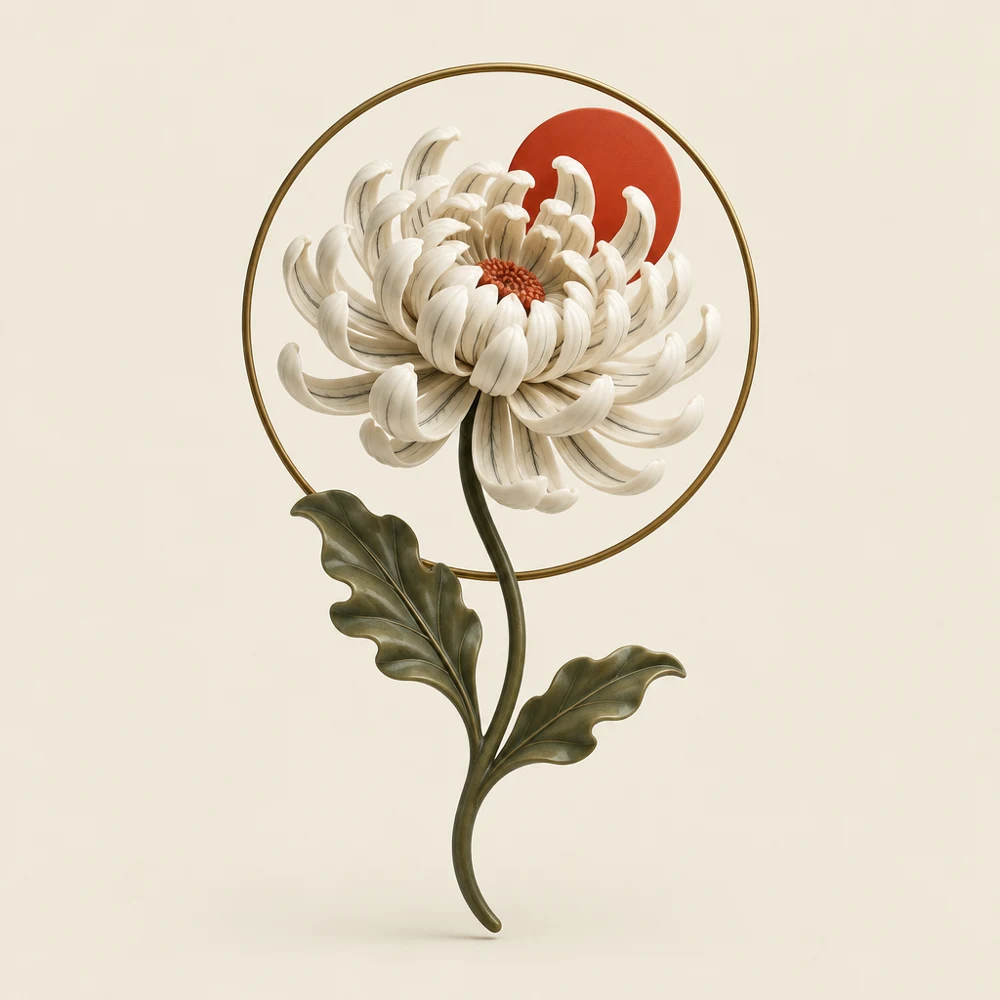

IL TUO SEGNO. LA TUA STORIA.
Non solo
inchiostro.
Identità.
Un’idea prende forma.
Un segno diventa parte di te.

FIG. 01 / METAMORFOSIESPLORA
LA SCULTURA
La struttura diventa identità.
01 / CULTURA TATTOO GALLERY
La tua storia.
Un altro linguaggio.
Cultura Tattoo Gallery è a Montesilvano, in Corso Umberto I, 590.
Entra nel mondo dello studio: scopri i tatuaggi, gli artisti e gli aggiornamenti attraverso il suo profilo Instagram.
Esplora i lavori reali ↗02 / ESPLORAZIONE VISIVA
Prima della pelle,
l’immaginazione.
Traccia, stencil, inchiostro.
Un unico concept che evolve davanti a te.
TRE FASI / UN SOLO SEGNO
FASE 01 / LA TRACCIA
La traccia
Il gesto nasce leggero: proporzioni, direzione e respiro prima che il segno diventi definitivo.
Visual originali generati per questa demo dopo una ricerca del linguaggio visivo pubblico dello studio. Sono concept illustrativi ispirati a quell’atmosfera e non rappresentano tatuaggi realmente eseguiti da Cultura Tattoo Gallery.
03 / PORTA UN AMICO — CONCEPT INTERATTIVO
Passa
il segno.Una storia ne accende un’altra.
Condividi Cultura con una persona che vuoi portare con te. Il tuo segno apre la catena, il suo ne crea un’altra parte e l’opera digitale evolve.
Il tuo segno apre la catena.
Demo funzionale proposta da Punto Due Studio. Non indica che Cultura Tattoo Gallery abbia già un programma referral attivo: benefit, condizioni e validità restano da definire con lo studio.
CI TROVI A MONTESILVANO
Corso Umberto I, 590Montesilvano · PescaraOttieni indicazioni ↗@culturatattoogallery ↗